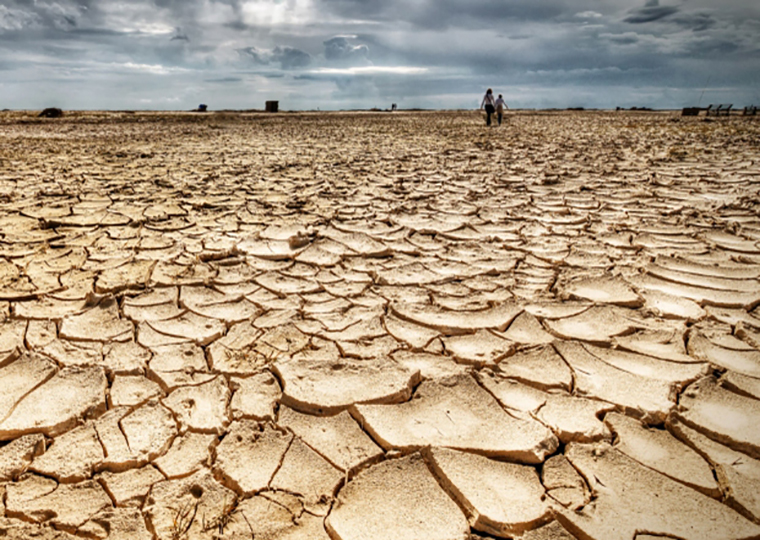

Latest Columns
더보기-
- 미리 보는 신세계, 5G 기술도 스타트
- 5세대 이동통신을 의미하는 5G는 더 이상 이동통신기술의 진화만을 뜻하지 않는다. 그것을 기반으로 한 다양한 서비스산업을 총망라한다. 전 산업의 융·복합을 촉진하는 또 하나의 플랫폼 ···
- 홍승은 ETRI 5G사업 전략 실장
-
- 4차 산업혁명에서 살아남기
- ‘제4차 산업혁명’과 ‘스마트 공장(Smart Factory)’에 대한 한·중·일의 반응은 제각각이다. 일본은 제조업 경쟁력을 강화하기 위해 공장에 로봇을 도입한 ‘로봇 신전략’을 내세운다. 중국은 ···
- 이준정 미래탐험연구소 대표
-
 - 재난에 대한 비관론과 낙관론
- <사피엔스>의 저자 유발하라리는 그의 저서 <호모데우스>에서 기아, 역병, 전쟁은 인류 삶의 현실과 동의어라고 했다. 모든 재난은 인류의 일상으로 들어와서 수많은 인명을 앗아갔고 ···
- 과학과 사람들 원종우 대표